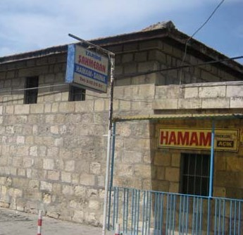

Şahmaran, yılanların kraliçesi olarak bilinen efsanevi bir varlıktır. Baş kısmı kadın, gövdesi ise yılan şeklindedir. Mersin'in Tarsus ilçesi bu efsanenin en çok bilinen versiyonunun geçtiği yerdir.
(Cemşab'ın Keşfi) Bir zamanlar Tarsus’ta, Cemşab adında yoksul ama zeki bir genç yaşarmış. Geçimi için odun satan bir ailenin oğlu olan Cemşab, arkadaşlarıyla ormanda bal dolu bir kuyu keşfetmiş. Arkadaşları balı çıkarmak için Cemşab’ı aşağıya indirmiş ve balın çoğunu çıkarmışlar. Son balı çıkarmak için Cemşab’ı mağaraya indiren arkadaşları, paylarına daha fazla bal düşsün diye onu orada bırakıp kaçmışlar. Kuyunun sonunda ışıklı bir mağara bulunuyormuş. Bu mağara, yılanlar ülkesiymiş ve orada Şahmaran yaşarmış.
Cemşab, kuyuda Şahmaran’la tanışmış. Şahmaran, ona zarar vermemiş; aksine onu sevmiş, ona bilgeliği, şifalı otları, doğa sırlarını öğretmiş. Cemşab yıllarca orada yaşamış, ama sonunda ailesine duyduğu özlem ağır basmış. Şahmaran, ayrılmasına izin vermiş, ama bir şartla: "Kimseye benden bahsetmeyeceksin ve bedenine su değdirmeyeceksin.Çünkü yılanlar benim yerimi öğrenirse sonum olur." Cemşab bu sözleri tutacağına yemin ederek Tarsus’a dönmüş.
Yıllar sonra Tarsus’ta kral hastalanmış ve hekimler ancak Şahmaran’ın etini yiyerek iyileşeceğini söylemiş. Halk arasında Şahmaran’ın yerini bilenin cildinde yılan pulları çıkacağına inanılırmış. Vezir herkesi toplayıp tek tek hamama götürmüş. Cemşab da zorla hamama götürülmüş ve yıkandığında vücudunda pullar ortaya çıkmış. Böylece Şahmaran’ın yerini açıklamak zorunda kalmış. Vezir ve adamları Cemşab'la birlikte kuyuya gidip Şahmaran’ı bulmuşlar. Şahmaran, Cemşab’a kızmamış, aksine son bir öğütte bulunumuş: “Beni üçe bölsünler. Başımı krala yedirsinler, şifasını bulacak. Gövdemi vezire yedirsinler, ölsün. Kuyruğumu sen ye, bilgeliğim sana geçsin.” Her şey Şahmaran’ın dediği gibi olmuş. Cemşab, ondan sonra büyük bir hekim olmuş. Bazı rivayetlerde Cemşab’ın adı Lokman Hekim olarak geçer. Şahmaran ölür ama bilgeliği yaşayanlara aktarılmış olur.
Tarsus’ta Şahmaran Hamamı olarak bilinen yer, efsaneye göre Şahmaran’ın öldürüldüğü yerdir. Tarsus’ta ve çevresinde birçok evin duvarında Şahmaran figürü bulunur. Halk arasında evde Şahmaran resmi olursa uğur getireceğine, kötülüklerden koruyacağına inanılır.
Efsanenin başka bir versiyonuna göre; yılanlar Şahmeran’ın öldürüldüğünü bilmiyorlar. Yılanların Şahmeran’ın öldürüldüğünü öğrendiğinde Tarsus’u istila edeceği rivayet edilir. ‘’ Adana selden, Misis yelden, Tarsus yılandan yıkılacaktır. ‘’ diye bir atasözü de bulunuyor.
Bilgelik ve doğa bilgisinin simgesidir. Kadın figürü olarak koruyucu, ama aynı zamanda fedakâr bir liderdir. Doğa ile insanın, kadın ile bilgeliğin bir birleşimi olarak görülür. Kadim Anadolu mitolojisinin ve kadın figürlerinin güçlü bir temsilcisidir.
Bu efsane, Tarsus'un kültürel zenginliğini ve halk hikayelerindeki derinliği yansıtır.